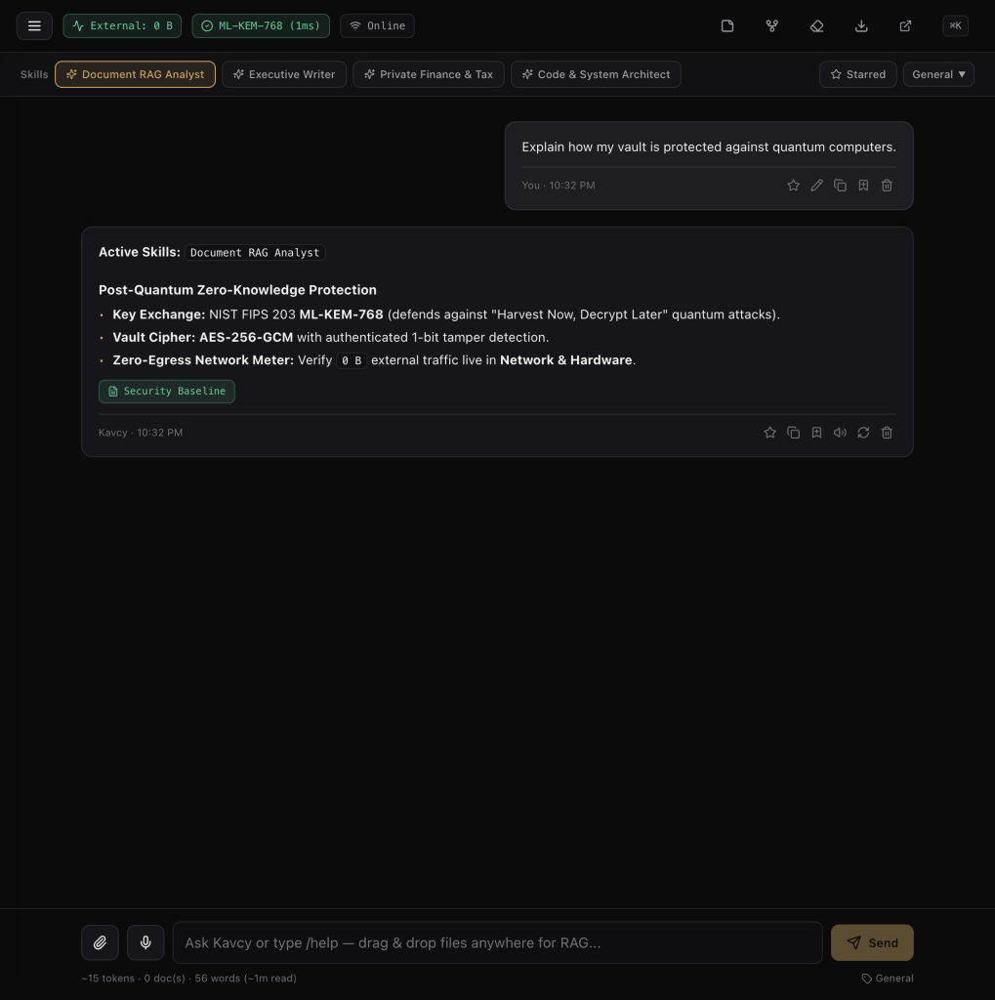
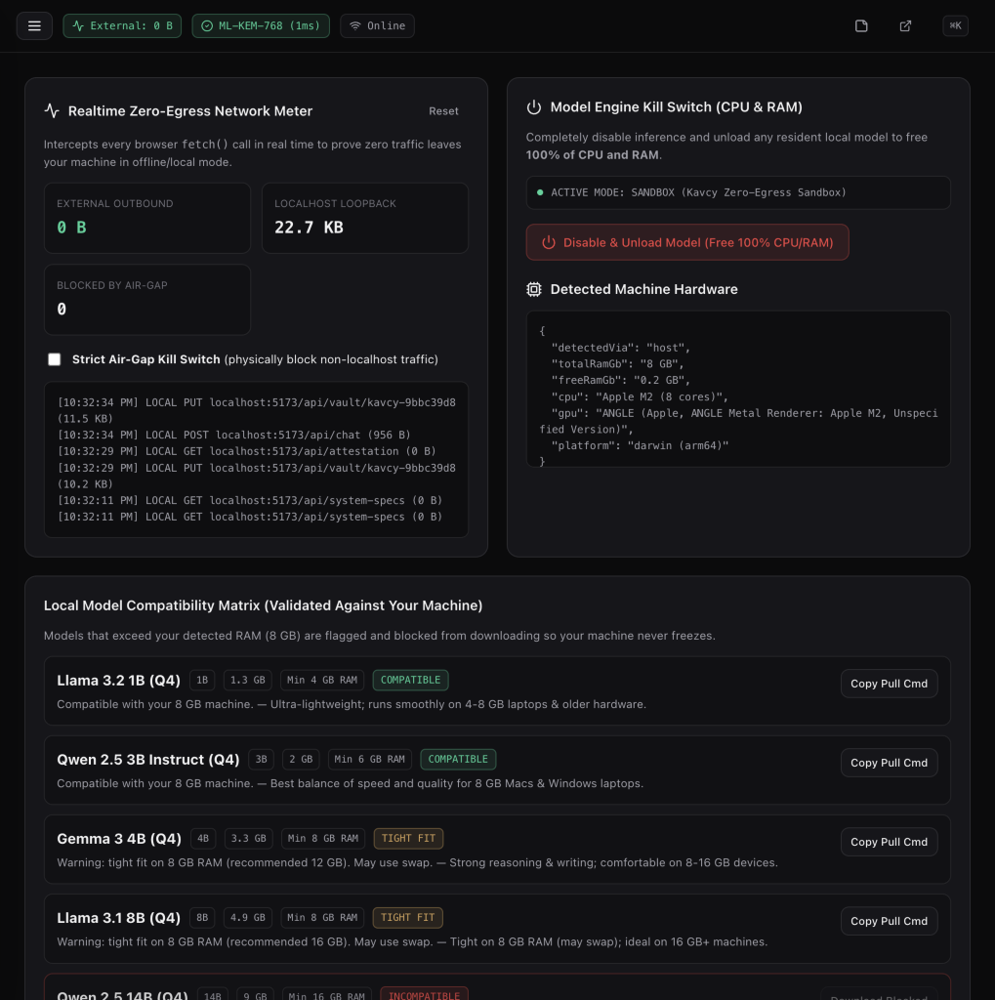
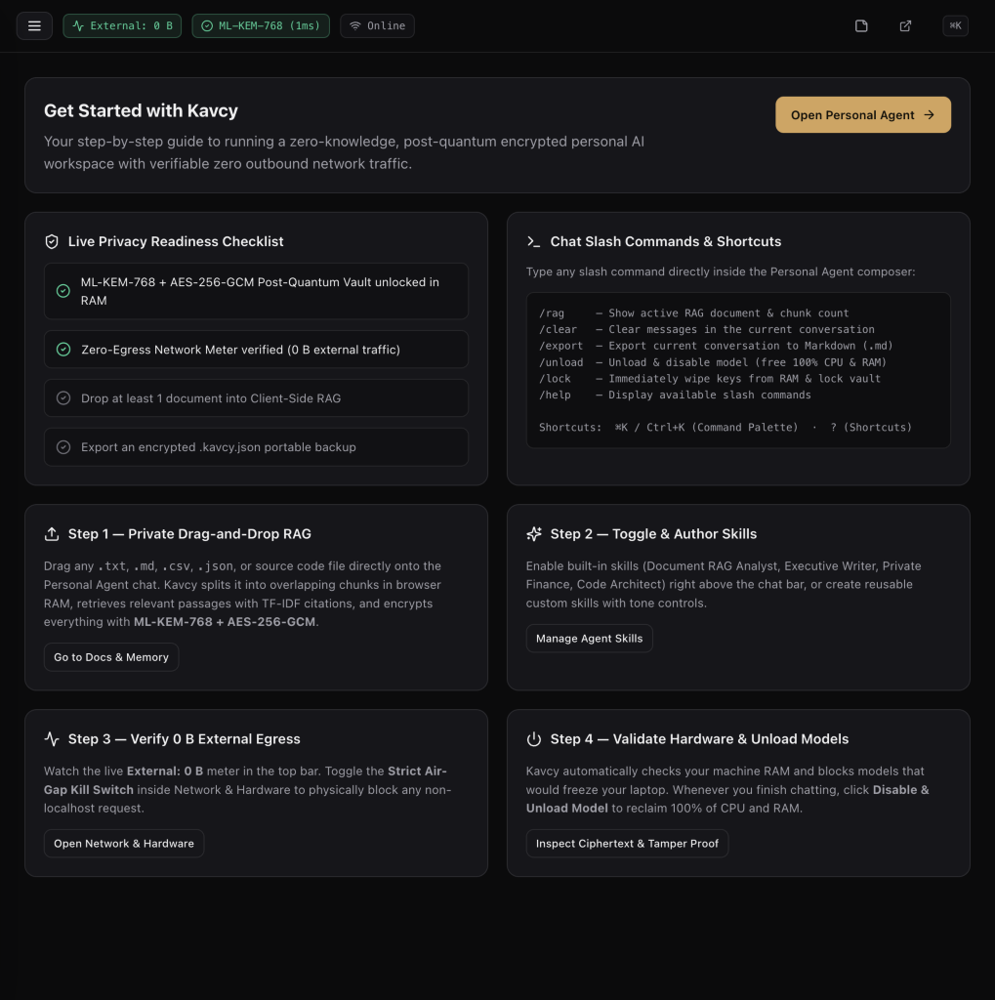
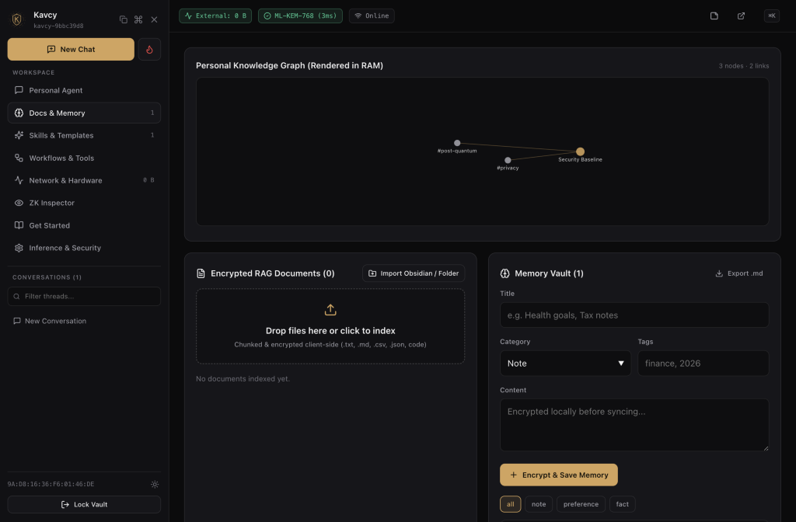
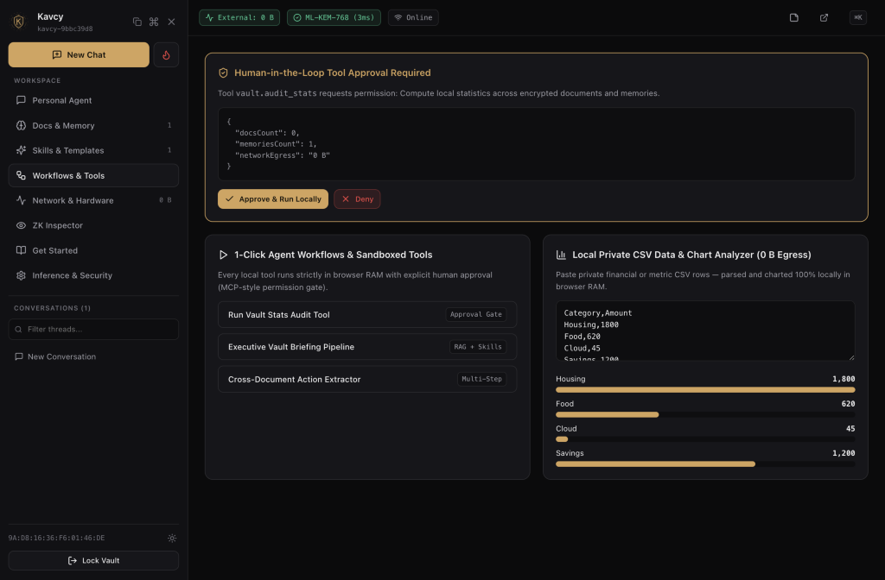
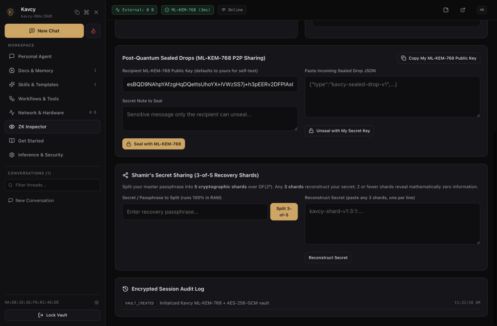

Own your intelligence.
Prove nobody else can read it.
Kavcy is a post-quantum, zero-knowledge personal AI vault. Drop PDFs, Obsidian folders, and private notes into client-side RAG, verify 0 B outbound traffic in real time, and unload local models in 1 click to reclaim 100% of CPU and RAM.

Don't trust a privacy policy. Verify the math.
Every layer of Kavcy is engineered so that even if a host, database, or network cable is compromised—today or in a post-quantum future—your thoughts remain mathematically unreadable.
NIST FIPS 203 ML-KEM-768 + AES-256-GCM
Classical RSA and X25519 key exchanges are vulnerable to "Harvest Now, Decrypt Later" quantum attacks. Kavcy encapsulates a fresh 256-bit AES-GCM data key with ML-KEM-768 on every single save, wraps your secret key with 310,000-round PBKDF2-SHA512, and includes built-in 3-of-5 Shamir recovery shards and a Duress Decoy Vault.
// Stored ciphertext envelope (zero plaintext) { "algorithm": "ML-KEM-768+AES-256-GCM", "kdf": "PBKDF2-SHA512 (310,000 rounds)", "kemCiphertext": "1088-byte lattice encapsulation", "encryptedData": "AES-256-GCM + 128-bit auth tag", "tamperResistance": "1-bit flip -> immediate reject" }
Live Outbound Byte Meter & Strict Air-Gap Switch
Before React even mounts, Kavcy instruments window.fetch() to log every local, external, and
blocked request. Flip the Strict Air-Gap Kill Switch to physically block any non-localhost
traffic, or enable Direct-to-TEE Mode when you explicitly want Confidential GPU inference.
// Realtime Network Meter Snapshot EXTERNAL_OUTBOUND: 0 B LOCALHOST_LOOPBACK: 22.7 KB (opaque ciphertext) AIR_GAP_BLOCKED: 0 requests PROXY_HOP_STATUS: BYPASSED (Direct-to-TEE ready)
Gigabyte IndexedDB + PDF/Obsidian Hybrid RAG
Drop .pdf, .md, .csv, .json, or an entire Obsidian
folder directly into Kavcy. Files are chunked in browser RAM, indexed with
Hybrid BM25 + 3-Gram Cosine Similarity, visualized in a live
Personal Knowledge Graph, and persisted encrypted inside IndexedDB.
// Zero plaintext search index on any server
1. Drop PDF / Obsidian folder -> extract text in RAM
2. Split into 550-char overlapping chunks
3. Hybrid BM25 + 3-gram cosine retrieval with citations
4. Encrypt chunks with ML-KEM-768 -> IndexedDB
Automatic RAM Validator & 1-Click Model Unload
Kavcy inspects your machine's real RAM, CPU, GPU, and WebGPU limits before allowing local model pulls—blocking oversized 14B/32B models on 8 GB laptops so your machine never freezes. Click Disable & Unload Model anytime to evict resident Ollama weights and free 100% of model CPU & RAM.
// Hardware Guard on 8 GB Apple Silicon Mac Qwen 2.5 3B (Q4) -> COMPATIBLE (2.0 GB) Llama 3.1 8B (Q4) -> TIGHT FIT (may swap) DeepSeek R1 32B -> BLOCKED (requires 32 GB RAM) POST /api/model/unload -> 0% CPU · 0 MB RAM
Cloud polish. Hardware-grade privacy. Zero compromise.
Compare Kavcy against mainstream cloud chatbots and developer-only local runners.
| Capability | Cloud AI Chatbots | Local-Only Runners | Kavcy |
|---|---|---|---|
Post-Quantum E2EE Vault (ML-KEM-768 + AES-256-GCM) |
No | No | ✓ Default on every save |
| Realtime Zero-Egress Network Meter + Air-Gap Kill Switch | No | No | ✓ Live 0 B proof |
| Hardware RAM Validator + 1-Click Model Unload (Free 100% RAM) | N/A | Manual / CLI | ✓ Built-in Guard |
| Shamir 3-of-5 Recovery Shards + Duress Vault + Sealed Drops | No | No | ✓ Included free |
| Client-Side PDF/Obsidian RAG + Knowledge Graph + Local CSV Charts | Plaintext upload | Docker setup | ✓ 100% in browser RAM |
| Serverless P2P WebRTC Sync + BYOS (S3/R2/WebDAV) | Vendor lock-in | Single device | ✓ Full sovereignty |
Official Node.js (@kavcy/sdk) & Python (kavcy-sdk) SDKs |
Paid APIs | Rarely | ✓ Open-Source MIT |
Every screen verified. Click any screenshot to inspect full-size.
Real captures from the live Kavcy workspace—zero mockups, zero console errors.
Initialize or Unlock Your ML-KEM-768 Vault
Generate a 6-word post-quantum passphrase or unlock via dual-synced IndexedDB cache. Supports portable
.kavcy.json backups, recent vault quick-pickers, and plausible-deniability Duress passphrases.

Separate Threads, Burn-After-Close Mode & Split Canvas
Drag and drop documents right onto the chat, launch volatile RAM-only Burn-After-Close threads, open
drafts in the editable Split-Pane Artifact Canvas, or use slash commands (/rag,
/unload, /lock).
Live 0 B Network Meter, RAM Sparkline & Model Kill Switch
Prove zero traffic leaves your machine, watch real-time host RAM telemetry, block models that exceed your hardware, check WebGPU readiness, and unload local Ollama models in 1 click to free 100% CPU & RAM.


Left-Nav Get Started Guide & Privacy Readiness Checklist
Onboard in seconds with a live Privacy Readiness Checklist, slash command cheat sheet, and
⌘K Command Palette right inside the app.
Personal Knowledge Graph, PDF RAG & Folder Sync
Explore live entity & tag connections across your encrypted documents and memories in RAM. Bulk-import entire Obsidian folders or PDFs with Hybrid BM25 + 3-gram vector search.


Human-Approved Local Tools, Compare Mode & Voice Memos
Inspect exact JSON payloads before approving local tools, chart private financial CSVs with 0 B egress, run side-by-side prompt comparisons, schedule local routines, and encrypt offline voice memos.
Post-Quantum Sharing, Serverless WebRTC & 3-of-5 Recovery
Seal messages to any recipient's ML-KEM-768 public key, sync encrypted vaults peer-to-peer over WebRTC with zero signaling server, split recovery keys into 3-of-5 Shamir shards, and verify live SHA-256 bundle integrity.

Embed Kavcy's post-quantum engine in your own stack.
Official MIT-licensed SDKs for Node.js/TypeScript and Python—tested in CI on every commit.
Node.js & TypeScript (@kavcy/sdk)
npm install @kavcy/sdk
import { KavcyVault, splitSecret, combineShares, chunkDocument, searchRag } from '@kavcy/sdk';
const vault = await KavcyVault.create('app-vault', 'strong-passphrase');
const envelope = await vault.encrypt({ note: 'Private user memory' });
const plain = await KavcyVault.decrypt(envelope, 'strong-passphrase');
const shards = splitSecret('strong-passphrase', 5, 3);
const recovered = combineShares([shards[0], shards[2], shards[4]]);
Python (kavcy-sdk)
pip install kavcy-sdk
from kavcy import KavcyVault, split_secret, combine_shares, chunk_document, search_rag
vault = KavcyVault("py-vault", "strong-passphrase")
envelope = vault.encrypt({"notes": ["Private financial summary"]})
data = KavcyVault.decrypt(envelope, "strong-passphrase")
shards = split_secret("strong-passphrase", total_shares=5, threshold=3)
assert combine_shares([shards[0], shards[2], shards[4]]) == "strong-passphrase"
Run everywhere — Web, iPad, macOS, and Windows.
Latest Release: v1.2.0 · Automatically built & published via GitHub Actions
Web & iPad / Mobile PWA
Zero install. Works offline with IndexedDB encryption and slide-over mobile navigation.
Launch Web AppmacOS Desktop (.dmg)
Native Apple Silicon app with local Ollama bridge, hardware RAM guard, and 1-click model unload.
Download macOS (.dmg)Windows Desktop (.exe)
Native NSIS installer and standalone portable executable built cleanly in CI.
50-Feature Roadmap for v3.0 & v4.0
Kavcy v2.0 shipped all 25 core features. Here is what comes next on our public engineering roadmap.
25 Next-Gen Local & Ecosystem Features
Opt-in WebLLM GPU inference, ONNX dense vector embeddings, offline Whisper audio transcription, Tesseract
OCR, Pyodide Python sandbox, full desktop MCP client, ⌥Space global launcher, CRDT Yjs sync,
ML-DSA-65 signatures, Argon2id WASM KDF, Rust kavcy-core crate, Go SDK, and code-signed installers.
25 Mesh, Compliance & Federation Features
Multi-node TEE consensus, encrypted LAN compute mesh (iPad → desktop GPU), local PII redaction firewall
(HIPAA/SOC 2), Merkle audit chains, encrypted RBAC spaces, multi-agent local swarms, IMAP/CalDAV bridge,
open .kavcy RFC spec, QR paper cold storage, and third-party cryptography audit.
Built for healthy skepticism.
Does GitHub Pages or any server ever see my conversations or files?
No. On GitHub Pages, Kavcy runs 100% inside your browser RAM and encrypted IndexedDB with zero backend servers. Even if you attach an optional sync host or BYOS S3/R2 bucket, only opaque ML-KEM-768 + AES-256-GCM ciphertext leaves your device.
What if I forget my master passphrase?
Because Kavcy is strictly zero-knowledge, there is no password reset backdoor. Use the built-in Shamir 3-of-5 Recovery Shards tool in ZK Inspector to split your passphrase across 5 trusted locations or family members—any 3 shards recover it safely.
Will running Kavcy slow down or freeze my 8 GB laptop?
No. Kavcy installs zero heavy model weights by default (115 KB web core). If you choose to connect a local Ollama runtime, Kavcy validates your exact RAM first, blocks incompatible 14B/32B models, and gives you a 1-click Disable & Unload Model kill switch to immediately reclaim 100% CPU & RAM.
Why does macOS or Windows warn when opening the open-source installer?
Community CI releases are not yet signed with paid Apple Developer ($99/yr) or Windows EV certificates.
On macOS, right-click Kavcy.app → Open. On Windows, click
More info → Run anyway—or inspect the open-source code and build locally with
npm run build.